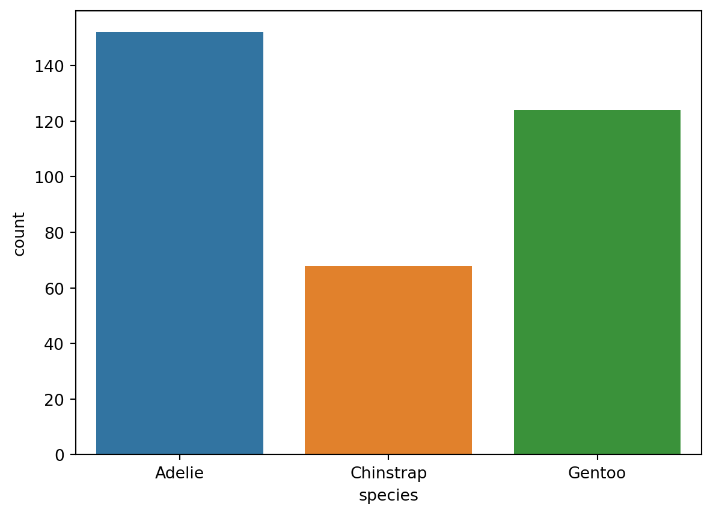
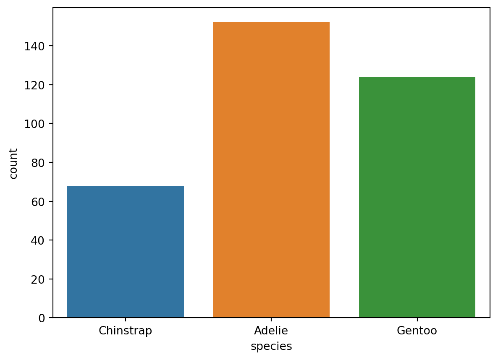

species = penguins["species"]4 Una variable categórica
En este apartado se describen los métodos básicos para explorar y analizar una variable categórica.
Analizaremos en concreto la variable species de nuestra hoja de datos, para conocer la distribución de los pingüinos por especies.
Comenzamos seleccionando la variable de interés en nuestra hoja de datos. Almacenamos el resultado en un nuevo objeto de nombre species.
4.1 El método describe()
Para obtener la información más relevante sobre la distribución de las especies de pingüinos aplicamos a species el método describe():
species.describe()count 344
unique 3
top Adelie
freq 152
Name: species, dtype: objectDe la salida anterior obtenemos la siguiente información sobre la variable species:
| Fragmento de la salida | Significado |
|---|---|
count 344 |
Hay \(344\) valores no nulos, así que se conoce la especie de todos los pingüinos del estudio. |
unique 3 |
La variable toma tres valores diferentes, es decir, hay tres categorías (las tres especies Adelie, Chinstrap y Gentto). |
top Adelie |
La categoría top o más frecuente, es decir, la especie más numerosa es la especie Adelie. |
freq 152 |
El número de pingüinos de la especie Adelie (la categoría top) es \(152\). |
Ejercicio 4.1 Utiliza el método describe() para obtener información sobre la distribución de los pingüinos por islas.
4.2 Tabla de recuentos
Ya sabemos que la especie más numerosa es Adelie, con \(152\) pingüinos, pero aún no sabemos cuántos pingüinos hay de las otras dos especies, Chinstrap y Gentoo. Para obtener una tabla con el número de pingüinos de cada especie usamos la función value_counts():
species.value_counts()Adelie 152
Gentoo 124
Chinstrap 68
Name: species, dtype: int64Ahora sabemos que la segunda especie más numerosa es Gentoo, con 124 ejemplares, y que solo hay 68 pingüinos de la especie Chinstrap.
Ejercicio 4.2 Determina el número total de hembras y de machos.
4.3 Diagrama de recuentos
Un diagrama de recuentos asocia a cada categoría una barra de longitud igual al número de observaciones en esa categoría.
Para realizar un diagrama del recuento de pingüinos por especie usamos la función countplot() del paquete seaborn
sns.countplot(data=penguins, x="species");
Si quitas el punto y coma ; al final de la instrucción anterior aparecerá el mensaje
<AxesSubplot:xlabel='count', ylabel='species'>
en la salida antes del gráfico.
Al terminar una instrucción con punto y coma ; se inhibe la impresión de la salida.
Nota que las alturas de las barras en el gráfico anterior coindicen con los recuentos que hemos calculado en el apartado anterior con value_counts().
A veces es preferible usar barras horizontales, porque se tiene más especio para las etiquetas de las categorías.
sns.countplot(data=penguins, y="species");Para realizar un diagrama de recuentos de las categorías de una variable categórica, usa la función countplot() deseaborn. E indica:
- El nombre de la hoja de datos como valor del argumento
data. - El nombre de la variable categórica como valor del argumento
xsi quieres barras verticales, o como valor del argumentoysi quieres barras horizontales.
Ejercicio 4.3 Crea un diagrama de recuentos para el número de hembras y machos, con barras verticales.
Ejercicio 4.4 Crea un diagrama de recuentos para el número de pingüinos en cada isla, con barras horizontales.
4.4 Personalización de los gráficos (opcional)
Los gráficos de la librería seaborn admiten muchas opciones para personalizar su aspecto cambiando por ejemplo los colores, los rótulos de los ejes, etc.
La personalización de los gráficos no carece de importancia, siendo especialmente relevante dar títulos descriptivos a los ejes. Pero en esta práctica nos centraremos en los procedimientos para realizar los gráficos y en la mayoría de ocasiones omitiremos los detalles de personalización de los mismos, que pueden consultarse en la documentación de seaborn.
En este apartado se da una muestra de las opciones para personalizar los diagramas de recuentos que se han presentado en el apartado anterior. Se trata de un apartado opcional y puedes por ahora omitir su lectura y volver a él al final de la sesión.
4.4.1 Colores
Si quieres un mismo color para todas las barras usa en argumento color:
sns.countplot(data=penguins, x="species", color="steelblue");Puedes ver los colores disponibles aquí.
También se puede indicar una secuencia de colores usando el argumento palette:
sns.countplot(data=penguins, x="species", palette=["steelblue", "coral", "gold"]);Como valor para palette se puede indicar una lista de colores, como en el ejemplo anterior, o el nombre de una de las paletes predefinidas (deep, muted, pastel, bright, dark y colorblind), como en el siguiente ejemplo:
sns.countplot(data=penguins, x="species", palette="colorblind");4.4.2 Rótulos
Con el siguiente código personalizamos los títulos de los ejes y damos un título global al gráfico
ax = sns.countplot(data=penguins, x="species")
ax.set(
title="Número de pingüinos de cada especie",
xlabel="Especie",
ylabel="Número de pingüinos"
);4.4.3 Orden de los niveles
Si te fijas en los gráficos que has hecho hasta ahora, apreciarás que las categorías aparecen en los gráficos en el mismo orden en el que aparecen en las filas de la hoja de datos.
Si quieres un orden personalizado para las categorías puedes usar el argumento order, como en el siguiente ejemplo:
sns.countplot(data=penguins, x="species", order = ['Chinstrap', 'Adelie', 'Gentoo']);
Con el siguiente código ordenamos las categorías de mayor a menor frecuencia.
sns.countplot(data=penguins, x="species", order = species.value_counts().index);